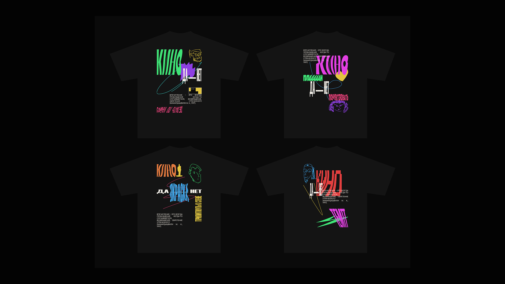
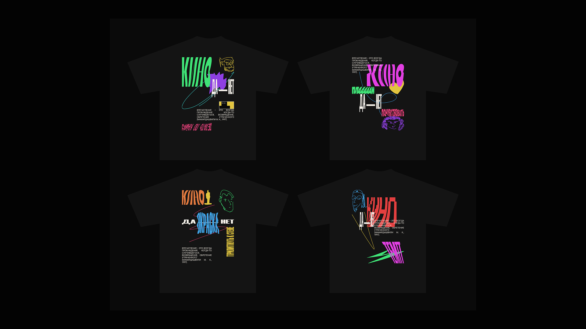
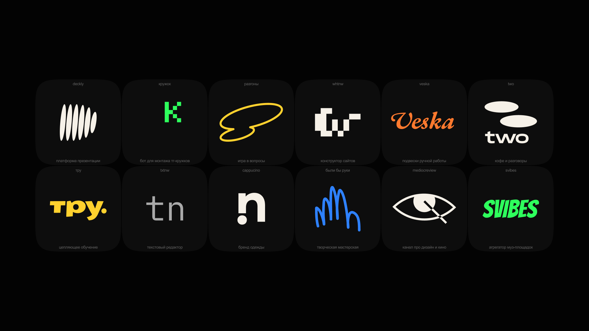
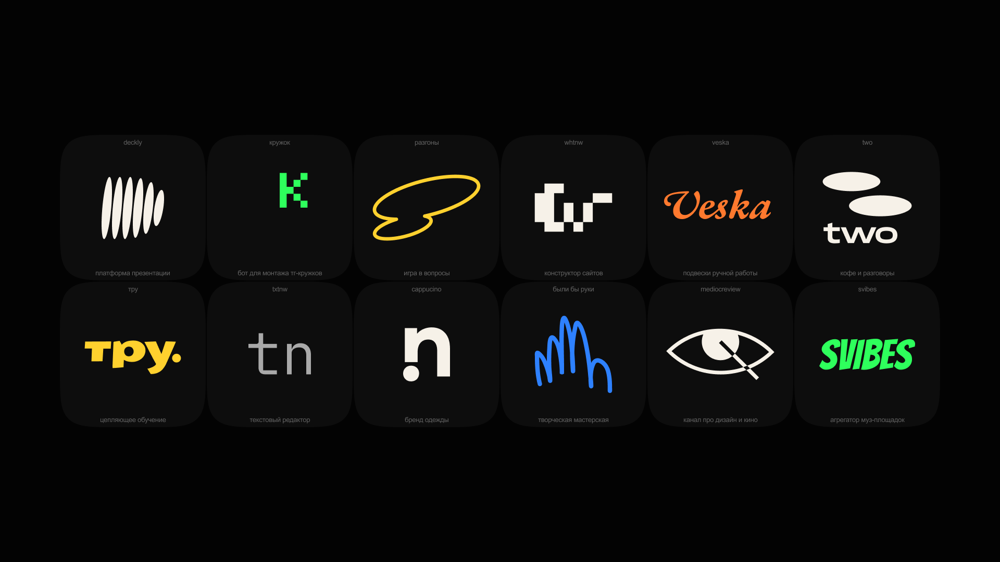

кто я как дизайнер:
— предприимчивый, с упором на работу продукта, а не картинки
— выбираю дизайн без дизайна, чтобы было все просто, но точно
— умею не делать лишнего
а теперь топ 5 моих работ
[то, что хотел бы делать]:
1)
(whtnw)
платформа для портфолио [пре-альфа версия]
2025 — сейчас:
я считаю, что конструкторы сайтов устарели, и создаю новый способ создавать портфолио, чтобы меняться мгновенно
стараюсь сделать интерфейс, который создаст новый опыт в создании сайтов

2)
(trueducation)
провайдер корпоративного обучения
2021-2024:
заложил стиль легкости, чтобы команде было созвучно доносить материал без скуки
мой логотип до сих пор используется и дизайн-код в стиле
3)
(txtnw)
текстовый редактор [альфа версия]
2025 — сейчас:
в интерфейсе нет ни одной кнопки и иконки, все на анимациях и микровзаимодействиях
редактор, который всегда хотел
4)
оформление воркшопов КИНОПРАКТИКИ
2024:
проводил обучение для ребят и хотел в контексте сложной юикс работы дать глоток свежего воздуха и немного дурацкости
сделал 10 презентация для 10 воркшопов и все провел
сделал уникальный мерч для 9-ти участников
 

5)
FNTNW
акцидентный шрифт
2025:
построил первый свой шрифт на 1 модуле с сеткой от 4 модулей в высоту, довольно сложная задача, с учетом того, что он курсивный
6)
разные проекты, фрагменты
2017 — 2025:
 

7)
10-20 продуктов под NDA*
2019 — 2025:
сделал много продуктов, интерфейсов, логики и здравого смысла для медицины Москвы
сейчас выбираю проекты, где больше творческой свободы, чтобы работы видели люди в жизни :)
меня можно пригласить в команду или проект, просто (напиши в телеграм) и там все обсудим :)
13:15, 19.09.2025